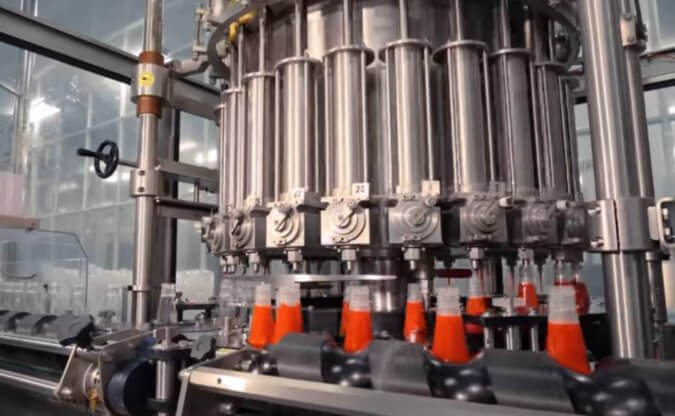

تأسست **عوافي لصناعة المواد الغذائية** في مدينة صنعاء بتاريخ 15/11/2012م، الموافق 30/ذو الحجة/1433هـ، وذلك عملاً بأحكام ونصوص قانون الشركات التجارية الصادر برقم (22) لسنة 1997م ولائحته التنفيذية الصادرة برقم (217) لسنة 2000م.
وبموجب أحكام عقد التأسيس، تتمتع عوافي بالشخصية الاعتبارية والذمة المالية المستقلة، لتنطلق في السوق اليمني ككيان صناعي رائد يلتزم بأعلى معايير المهنية والجودة في التصنيع الغذائي.
توفير منتجات الطماطم والمخللات بجودة عالية وسعر مناسب للمستهلك اليمني.
تعزيز عملية الاكتفاء الداخلي ورفد الاقتصاد الوطني بالمنتج المحلي الصنع.
المساهمة في الحد من البطالة وتعزيز الأنشطة الاجتماعية بين أبناء المجتمع.

بدأت الفكرة في عام 2009م بإنتاج الشطة والكاتشب للمطاعم الخاصة بالمالك المؤسس **الحاج/ علي يحيى محمد الضيفي**. ومع زيادة الطلب في أمانة العاصمة، تطورت الفكرة لزيادة المكائن لتلبية احتياجات السوق للمنتج الوطني، حتى تم تسجيل "عوافي" رسمياً في نهاية عام 2012م لدى وزارة الصناعة والتجارة.
لم تكن البداية عشوائية، بل سبقتها رحلة للمالك إلى الجمهورية العربية السورية لنقل الخبرات الصناعية. وخلال التأسيس، أشرف على الجودة **الأستاذ الدكتور/ عبد الجليل نعمان درهم** (خبير الجودة الأول في اليمن)، كما تمت الاستعانة بمدير الجودة المصري **محمد فتحي** (رحمه الله) لرفد السوق بمنتجات مطابقة لمواصفات الهيئة اليمنية للمقاييس.
رغم تحديات الحصار والعدوان منذ عام 2015م وتقلبات أسعار الصرف في 2017م، صمدت "عوافي" بفضل الله ثم إصرار قيادتها. استمر المصنع في رفد السوق المحلية، وتوسعت المنتجات لتنتشر في أمانة العاصمة والمحافظات الشمالية والجنوبية، لتصبح اليوم اسماً لامعاً يحظى بثقة المستهلك اليمني.
من اسم "الضيفي" للمطاعم الخاصة.. إلى "عوافي" لكل بيت يمني.
بدأت الرحلة بخطوط بسيطة للكاتشب والشطة "السفري"، واليوم نمتلك خطوط إنتاج متكاملة تلبي احتياجات السوق المحلي الواسع.
تشمل طاقتنا الإنتاجية الآن معجون الطماطم، الشطة الحارة، الكاتشب المميز، والصلصة، بالإضافة إلى تجارب إنتاج العصائر.
وصلت طاقتنا الإنتاجية لمرحلة تزويد الوكلاء في مختلف المحافظات اليمنية وبكفاءة عالية.
حصلت **عوافي** على عدد من العلامات التجارية التي قامت بتسجيلها لدى **وزارة الصناعة والتجارة**، وأصدرت بموجبها الوزارة قرارات رسمية بقبولها كعلامات تجارية حصرية ومحمية، ومن أبرز هذه العلامات:
تمتلك **عوافي** مركزاً رئيسياً في قلب العاصمة **صنعاء**، ومنه تنطلق شبكة واسعة من الوكلاء ونقاط البيع لتغطي مختلف أرجاء الوطن عبر مندوبي مبيعات متخصصين في المحافظات والمديريات.
الجمهورية اليمنية - صنعاء - المنطقة الصناعية
تغطية شاملة لجميع المحافظات اليمنية
تتواجد نقاط بيعنا وتوزيعنا في جميع المدن الرئيسية، حيث نعمل بجهد مستمر لضمان وصول منتجات "عوافي" الطازجة إلى كل متجر وقريب من كل مستهلك في الجمهورية.
ننتقي أفضل ثمار الفلفل والطماطم من المزارع اليمنية بعناية فائقة لضمان النكهة الأصلية الخالية من الشوائب.
نستخدم أحدث خطوط الإنتاج الآلية التي تضمن التعقيم الكامل والحفاظ على القيمة الغذائية دون تدخل بشري مباشر.
تخضع كل دفعة إنتاج لاختبارات دقيقة في مختبراتنا لضمان مطابقتها للمواصفات العالمية قبل وصولها لمنزلك.
100%
مطابقة للمواصفات
22
محافظة نغطيها
ISO
معايير تصنيع دقيقة
+500
نقطة توزيع